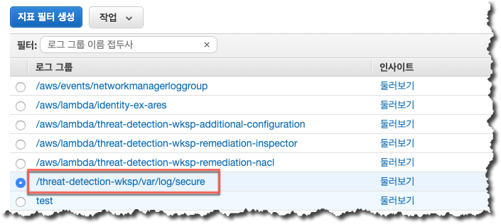
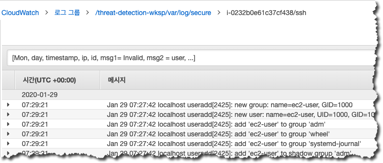
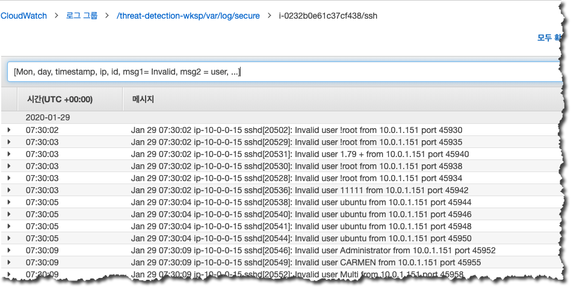
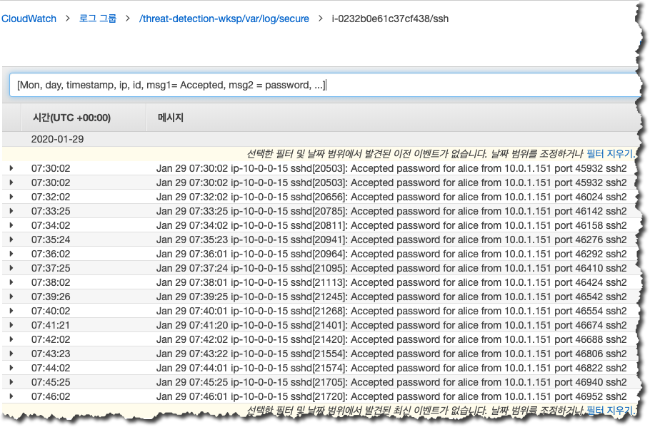
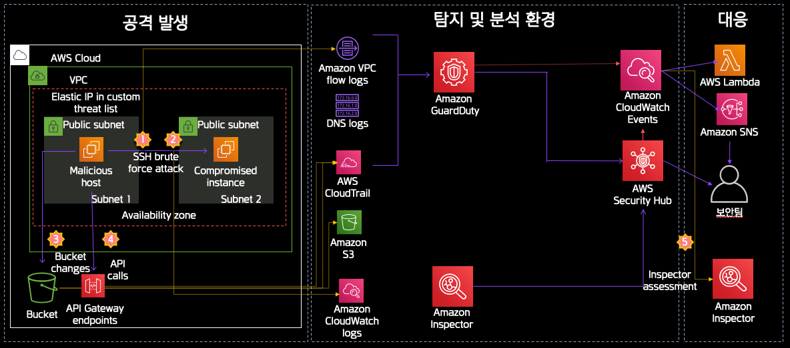

여러분들은 공격자가 사용하였던 임시보안자격증명을 어떻게 무력화하고 새로운 임시보안자격증명을 발급하여 사용할 수 있는지 학습하였습니다. 이번에는 공격자들이 어떻게 EC2 인스턴스를 침해할 수 있었는지 살펴보도록 하겠습니다. 공격자들은 EC2 인스턴스에 대한 메타데이터 접근 권한이 허용되어 있는 경우 상대적으로 손쉽게 자격증명들을 탈취할 수 있습니다.
여러분들이 지난 과정에서 침해당한 IAM 자격증명에 대한 내용을 분석하였을 때 여러분들은 탐지 내역에 EC2 인스턴스 ID 정보가 포함된 Principal ID 와 IAM Role 에 대한 정보를 확인할 수 있었습니다. 이 중 인스턴스 ID 를 사용하면 Security Hub 에서 EC2 와 관련한 탐지 내역들을 선별적으로 분석하실 수 있습니다.
이 과정에서의 분석은 GuardDuty 에 직접 접속해서 수행할 수도 있지만 Security Hub 를 이용한 통합 분석을 경험하는데 그 목적이 있습니다.
Security Hub 를 통해 확인할 수 있는 다양한 탐지 내역들을 확인해보면 EC2 인스턴스가 허용되지 말아야할 IP 주소와 통신하고 있었다는 것을 알 수 있습니다. 또한, 외부의 특정 IP 에서 EC2 인스턴스로 SSH 에 대한 Brute Force 공격을 시도하였다는 것을 알 수 있는데요. 여러분들은 이제 해당 EC2 인스턴스에 대한 Brute Foce 공격이 성공하였는지 여부 등을 확인하여야 합니다.
자동화된 위협 대응은 여러가지 업무들을 가능하게 합니다. 예를 들어 보안 팀에서 특정 위협이 발생하였을 경우 수작업을 통해 진행하였어야하는 다양한 위협 탐지 관련 정보 수집 작업 등이 대표적일 수 있습니다. 간단한 방법의 하나로, GuardDuty 에서 특정 공격을 탐지했을 경우 CloudWatch 이벤트 규칙을 이용해서 EC2 인스턴스에 설치되어 있는 Inspector 에이전트를 통해 해당 공격과 관련되어 있는 정보들을 탐색하도록 구성할 수 있습니다. 이 실습에서는 Inspector 에서 발견한 사항들을 Security Hub 에서 모니터링 및 관리하는 내용을 살펴보도록 하겠습니다. 우리는 EC2 인스턴스의 SSH 관련 설정이 모범 사례를 따르고 있는지를 확인할 예정입니다.
페이지의 첫번째 화면에 검색 내용이 없는 경우 “>” 버튼을 이용하여 다음 페이지에서 검색하시기 바랍니다.
password authentication over SSH 과 관련한 취약점을 Inspector 가 발견한 것으로 미루어 해당 EC2 인스턴스에 Password 기반 인증 기능이 활성화되어 있는 것으로 판단됩니다. Password 에 기반한 인증은 SSH Key Pair 기반의 인증보다 보안위 취약하기 때문에 비활성화하는 것을 권고합니다.
/threat-detection-wksp/var/log/secure 로그 그룹을 선택합니다.
“이벤트 필터링” 부분에 아래의 필터 조건을 입력합니다.
[Mon, day, timestamp, ip, id, msg1= Invalid, msg2 = user, ...]
 아래와 같이 필터 적용 후 결과를 확인합니다. 
필터를 적용 후 확인해보면 다수의 SSH 접속 시도가 있었음을 확인할 수 있습니다. 즉, 해당 인스턴스에 대해 Brute Force 공격이 있었음을 확인할 수 있습니다.
이번에는 아래와 같이 약간 수정된 이벤트 필터를 적용합니다.
[Mon, day, timestamp, ip, id, msg1= Accepted, msg2 = password, ...]
아래와 같이 필터 적용 후 결과를 확인합니다. 
이번에는 SSH 접근이 허용된 로그들을 확인할 수 있습니다. 즉, 공격자가 Brute Force 공격을 통해 해당 인스턴스에 정상적으로 접속하였음을 확인할 수 있습니다.
Brute Force 공격을 통해 침해되었던 EC2 인스턴스에 할당되어 있던 인바운드 SSH 규칙이 삭제되었기 때문에 이제 외부에서 EC2 인스턴스로의 SSH Brute Force 공격 시도는 원천 차단되었습니다.
아래는 침해 사고 분석 결과가 반영된 공격 분석 및 대응 입니다.
